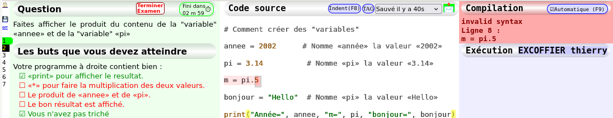
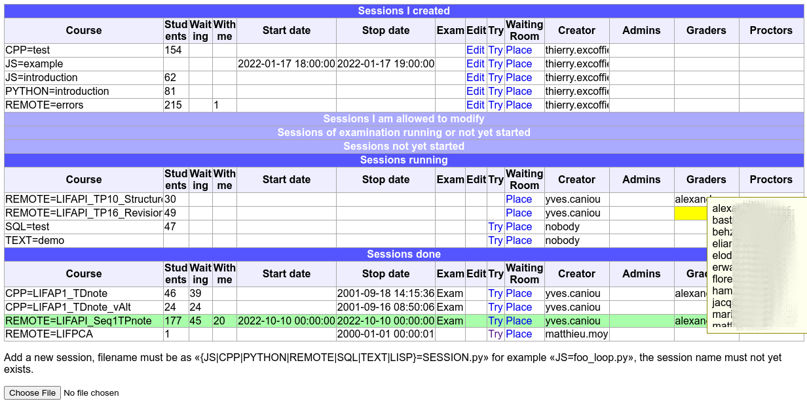
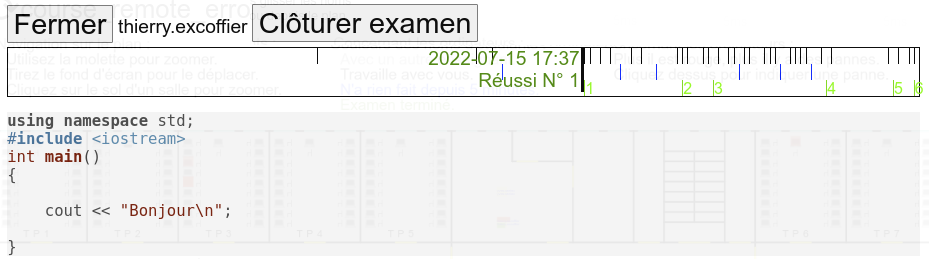

: C5 is Compiler Course Class in the Cloud : C5 is Compiler Course Class in the Cloud
: C5 is Compiler Course Class in the Cloud : C5 is Compiler Course Class in the CloudPourquoi utiliser C5 ?
En effet :
Présentation video de 5 minutes 32 (complètement dépassée) :
la vue étudiant
Présentation video de 4 minutes 14 (complètement dépassée) :
la vue surveillant
L'ensemble de l'environnement est programmé en Python.
Chaque sujet contient un ensemble de questions s'enchaînant successivement.
Pour chaque question il y a une classe dont les méthodes définissent la question. Voici les méthodes dans l'ordre d'appel lorsque l'étudiant arrive sur la question :
class Q1(Question):
"""Question 1"""
def question(self):
return "<p>Vous devez faire afficher «Bonjour»</p>"
def tester(self):
self.display('<p>Dans votre code source on devrait trouver :</p>')
self.check(self.worker.source, [
['print' , 'Le nom de la fonction «print» pour afficher la valeur'],
['Bonjour', 'Le texte «Bonjour» que vous devez afficher'],
])
if self.worker.execution_result == 'Bonjour\n':
self.next_question()
def default_answer(self):
return "# Tapez votre programme ici :\n"
Un sujet complet est une liste de questions gérées par un unique compilateur. La dernière ligne du fichier définie la liste des questions, si elle n'est pas indiquée alors toutes les questions du fichier sont proposées à l'étudiant :
Session([Q0(), Q1(), Q2(), Q3(), QEnd()])
On suppose que le serveur a été lancé, les explications sont plus loin sur la page si vous n'avez pas accès à un serveur existant.
Il faut le créer une première fois pluis boucler sur tester/améliorer.
Ensuite il ne reste qu'à recharger la page «Try» pour voir la nouvelle version.
C5 n'héberge pas de fichiers media pour le moment, il faut donc faire autrement :
echo "<img src=\"data:image/png;base64,$(openssl enc -base64 -A <image.png)\">"
Header set Access-Control-Allow-Origin "https://c5.univ-lyon1.fr"Remplacez par l'adresse de votre serveur C5 et ne mettez PAS le '/' final.
def question(self):
if self.sujet == 'a':
return "Vous avez le sujet A : ..."
else:
return "Vous avez le sujet B : ..."
def tester(self):
if self.sujet == 'a':
...
else:
...
def default_answer(self):
self.sujet = self.version() # 'a' ou 'b'
return ""
self.set_options(
{
# pour la coloration syntaxique avec highlightjs.org
# Option prédéfinie par le compilateur, pas besoin de la modifier.
'language': 'javascript',
# Messages affiché par le navigateur web
'forbiden': "Coller du texte copié venant d'ailleurs n'est pas autorisé.",
# Mettre une chaîne vide pour désactiver la confirmation (pendant le débugage)
'close': "Voulez-vous vraiment quitter cette page ?",
'question_title': 'Question',
'tester_title': 'Les buts que vous devez atteindre',
'compiler_title': 'Compilation',
'compiler_title_toggle': 'Désactivée (F9)',
'compiler_title_button': 'Maintenant ! (F9)',
'executor_title': 'Exécution',
'good': ["Bravo !", "Excellent !", "Super !", "Génial !", "Vous êtes trop fort !"],
'icon_reset': '🗑',
'icon_save': '📩',
'icon_stop': 'EXIT',
'reset_confirm': 'Vous voulez vraiment revenir à la version de départ ?',
'stop_confirm': "Vous voulez vraiment terminer l'examen maintenant ?",
'stop_done': "<h1>C'est fini.</h1>",
'time_running': 'Fini dans',
'time_done': "Fini depuis",
'time_seconds': " secondes",
'time_days': " jours",
'time_d': " j ",
'time_m': " m ",
'time_h': " h ",
'allow_copy_paste': False, # Valeur par défaut : définie dans l'interface d'administration.
'display_reset': True,
'automatic_compilation': True, # Recompile dès que c'est possible
'forget_input': False, # Ne mémorise pas les champs INPUT
'positions' : {
# [X, Largeur, Y, Hauteur, Couleur] en pourcentage écran
# Mettre le X ou Y à 100 pour faire disparaître la zone de l'affichage
'question': [1, 29, 0, 30, '#EFE'],
'tester': [1, 29, 30, 70, '#EFE'],
'editor': [30, 40, 0, 100, '#FFF'],
'compiler': [70, 30, 0, 30, '#EEF'],
'executor': [70, 30, 30, 70, '#EEF'],
'time': [80, 20, 98, 2, '#0000'],
'index': [0, 1, 0, 100, '#0000'],
'reset_button': [68, 2, 0, 2, '#0000'],
'save_button': [66, 2, 0, 2, '#0000'],
'local_button': [64, 2, 0, 2, '#0000'],
'stop_button': [61, 2, 0, 2, '#0000'],
# Diminuer de 1 la largeur de 'question' et 'tester'
# et remplacer par [29, 1, 0, 100, '#EEE']
# pour placer les numéros de ligne à la gauche de l'éditeur.
'line_numbers': [100, 1, 0, 100, '#EEE'],
},
# For compile_remote. The values must be allowed by the server.
'compiler': 'g++', # or 'gcc'
'compile_options': ['-Wall'], # you can add '-pedantic'
'ld_options': [],
'allowed': [], # system call allowed. You can add 'brk'
})
Il faut mettre seulement les options qui changent. Les options restent les mêmes tant qu'elles ne sont pas modifiées. La disposition de l'écran peut changer d'une question à l'autre.
Pour les options qui restent constantes pour toutes les questions, vous pouvez les indiquer dans la variable globale COURSE_OPTIONS :
COURSE_OPTIONS = { 'display_reset': False }Il est nécessaire d'avoir un compilateur du langage écrit en JavaScript :
Avec COMPILE_REMOTE et COMPILE_LISP la touche F8 permet de reformater le code source, mais cela casse le undo.
Les utilisateurs sont :
La page d'accueil va être différente pour ces 5 catégories de personnes.
Cette configuration est dans le fichier c5.cf
Ces personnes voient la liste des sessions les concernant :
Ajout d'une nouvelle session. Vous cliquez sur le compilateur puis choisissez le fichier Python définissant la question. Il est conseillé de préfixer le nom du fichier Python par le code de l'UE.
Cette configuration est enregistrée sous le nom COMPILE_*/nom_sujet.cf le sujet est dans COMPILE_*/nom_sujet.py et les logs des étudiants dans le répertoire COMPILE_*/nom_sujet.
Il permet de définir les paramètres de la session en cours et de surveillant son déroulement.
Colonne de gauche :
Partie centrale :
Partie droite, en haut des boutons pour :
Partie droite, au dessous des boutons :
Les administrateurs de session peuvent regarder le détails de tous les cours. Pour chaque étudiant on a le détail et le résumé de toute la colonne sur la dernière ligne (importable directement dans TOMUSS).

Quand un surveillant (non administrateur) arrive sur C5 on lui liste tous les examens présents et futurs pour lesquels il est surveillant. Il clique alors sur Checkpoint pour gérer la salle d'attente. Les enseignants peuvent tester la session même s'ils n'ont pas été placés sur le plan.
La salle d'attente affiche en haut de l'écran :
Le haut du plan contient la légende et comment l'utiliser. Les surveillants normaux ne voient que leurs étudiants, les administrateurs voient tous les étudiants passant l'examen.
Les ordinateurs en rouge sont ceux avec un problème, les surveillants peuvent déclarer les problèmes et on peut aussi indiquer que le poste a été réparé.
Les étudiants qui changent de fenêtres pendant l'examen sont mis en évidence sur cette vue avec un barre de progression rouge indiquant le nombre de changements de fenêtres.
Au dessous de la barre de progression rouge il y a un barre verte indiquant le nombre de questions réussies dans la suite d'exercices.
Quand on clique sur un étudiant on peut accéder à la dernière version de son travail. On peut utiliser un ascenseur temporel pour voir l'évolution de ce qu'il a fait. Le déplacement dans le temps est instantané.
Le code source s'affiche alors au dessous de la barre d'ascenseur
Le bouton «Clôturer examen» doit être utilisé quand il quitte la salle afin qu'il ne puisse pas continuer l'examen à l'extérieur. L'étudiant a un bouton EXIT sur l'éditeur de source pour terminer l'examen.
Le bouton «Noter l'étudiant» permet de noter le source de l'étudiant :
Il clique sur l'étudiant placé et arrive sur l'éditeur C5 avec le barème de notation affiché. Il n'a plus qu'à cliquer pour mettre les notes qui sont immédiatement enregistrées. Si 2 enseignants notent en même temps le même étudiants, dans le pire cas ils perdent une seule note.
Le correcteur peut ajouter des commentaires aux lignes et envoyer un mail à l'étudiant avec son programme commenté.
Le correcteur peut essayer le code de l'étudiant pour le tester et même le modifier temporairement pour voir ce que cela donne.
L'étudiant voit la liste de tous les examens en cours et à venir. Il doit cliquer sur le bon si l'enseignant ne lui a pas donné le lien direct.
Une fois sur le cours, si celui-ci a une salle d'attente, cela affiche «Donnez votre nom à l'enseignant pour qu'il vous ouvre l'examen»
Lancez ces commandes (Ubuntu) :
apt update apt install python3-websockets python3-aiohttp astyle curl npm racket # nginx certbot git clone https://github.com/texcoffier/C5.git cd C5 make
Si tout s'est bien passé, une page web s'ouvre sur l'interface d'administration. Vous pouvez alors cliquer sur «Session» pour choisir une session.
La configuration de C5 est un script exécutable, vous pouvez en créer autant que vous voulez. Il est conseillé de faire une configuration pour le développement local et une configuration pour la production. Dans tous les cas vous lancez les commandes sur votre machine de développement, elle seront éventuellement exécutées via SSH sur le serveur de production. On va supposer que vous appeliez votre configuration c5, voici ce que vous devez faire :
Plus rarement utilisé :
Il faut remplacer /WebSocket/, 4201, 4202 par les bonnes valeurs.
server {
listen 443 ssl;
server_name c5.univ-lyon1.fr;
ssl_certificate /etc/letsencrypt/live/c5.univ-lyon1.fr/fullchain.pem; # managed by Certbot
ssl_certificate_key /etc/letsencrypt/live/c5.univ-lyon1.fr/privkey.pem; # managed by Certbot
location ~ /WebSocket/ {
rewrite ^/WebSocket/(.*) /$1 break;
proxy_pass http://127.0.0.1:4202;
proxy_http_version 1.1;
proxy_set_header Upgrade $http_upgrade;
proxy_set_header Connection Upgrade;
proxy_set_header Host $host;
proxy_set_header X-Forwarded-For $proxy_add_x_forwarded_for;
}
location ~ {
proxy_pass http://127.0.0.1:4201;
proxy_set_header X-Forwarded-For $proxy_add_x_forwarded_for;
}
}
Légende :
Ordre alphabétique des fichiers.
| 127 | Administre C5 sur la machine locale (même paramètres que utilities.py). |
| BUILDINGS/Nautibus BUILDINGS/empty | Les plans des bâtiments. |
| COMPILE_CPP/test.py | Exemple d'utilisation de compile_cpp et de récupération des informations concernant la place de l'étudiant dans la salle. |
| COMPILE_JS/introduction.py | Mini cours de JavaScript. |
| COMPILE_JS/example.py | Un exemple minimaliste de cours pour commencer. |
| COMPILE_LISP/conway.py | Un exemple de programme LISP. |
| COMPILE_PYTHON/introduction.py | Un mini cours Python. |
| COMPILE_PYTHON/editor.py | C'est l'éditeur interactif de questionnaire. Les questionnaires étant écrits en Python, il est nécessaire de les éditer et tester dans l'environnement Python. |
| COMPILE_REMOTE/test.py | Exemple d'utilisation de compile_remote. |
| COMPILE_REMOTE/errors.py | Une série d'exercices dans lesquels l'étudiant doit corriger des erreurs de syntaxe. |
| COMPILE_SQL/test.py | Exemple d'utilisation de compile_sql pour tester s'il fonctionne. |
| COMPILE_TEXT/demo.py | Exemple d'utilisation de compile_text pour la saisie de texte libre. |
| DOCUMENTATION/index.html | Cette page d'explication. |
| DOCUMENTATION/ screen-admin.png screen-checkpoint.png screen-course.png screen-python.png screen-src.png screen-student.png screen-teacher-list.png screen-time-travel.png | Copies d'écran pour cette page. |
| Makefile | Utilisé par utilities.py, pas directement. |
| README.rst | Page d'accueil pour GitHub. |
| adm_course.py | Page d'accueil du cours avec les statistiques étudiants. |
| adm_session.py | Éditeur de session. |
| c5.svg | Logo. |
| ccccc.css ccccc.py | Interface d'étudiant pour travailler. |
| checkpoint.py | Gestion de la salle d'attente et placement des étudiants sur le plan. |
| compatibility.py | Utilitaires pour ajouter des fonctions manquantes à JavaScript. Et aussi des fonctions utiles pour plusieurs pages. |
| compile.py | La classe racine de tous les compilateurs. |
| compile_cpp.py | Compilateur incomplet C++ en javascript. |
| compile_js.py | Interpréteur JavaScript. |
| compile_lisp.py | Interpréteur LISP. |
| compile_python.py | Interpréteur Python (brython). |
| compile_remote.py | Contacte compile_server.py pour compiler et exécuter. |
| compile_sql.py | Interpréteur SQL (alasql). |
| compile_text.py | Compilateur ne faisant rien pour réponses en texte libre |
| compile_server.py | Serveur de compilation et exécution de C++ avec différents compilateur et options possibles. |
| favicon.ico | L'icone des pages web, calculée à partir de c5.svg. |
| dns_server.py | Un filtre (stdin/stdout) calculant le nom de la machine à partir de son adresse IP. |
| http_server.py | Le serveur web C5 pouvant fonctionner seul ou derrière un server web classique. |
| infos_server.py | Un filtre (stdin/stdout) calculant le nom et prénom à partir du login. |
| load_testing.py | Un simulateur de charge pour voir combien le système supporte d'étudiants. Difficilement utilisable car il faut le modifier pour indiquer un bon ticket de session. |
| question.py | La classe permettant de définir les questions. |
| tests.py | Tests de régression (ne teste pas la salle d'attente). |
| utilities.py | Classes et fonctions nécessaires pour les serveurs,
mais c'est aussi le script d'administration du serveur.
S'il est lancé sans arguments, cela affiche :
|
Les fichiers de configurations se terminent tous par .cf et contiennent une expression Python :
Les fichiers de logs se terminent tous par .log :
Divers fichiers générés à l'installation ou à l'utilisation :
Installer les paquets :
apt install python3-selenium chromium-chromedriver firefox-geckodriver xnest xvfb
Lancer les tests :
Le résumé est dans tests.log
Fonctionnalités manquantes :
| Session en préparation | Draft | Seulement pour les créateurs et admins |
| Session future | Ready | Placement des étudiants. Testable par les Graders |
| Session en cours | Ready | Examen en cours. |
| Session à corriger | Grade | Correction en cours |
| Session terminée | Done | Correction fini, mais on peut revenir dessus. |
| Session Archivée | Archived | Seulement affichée aux créateurs et admins. |